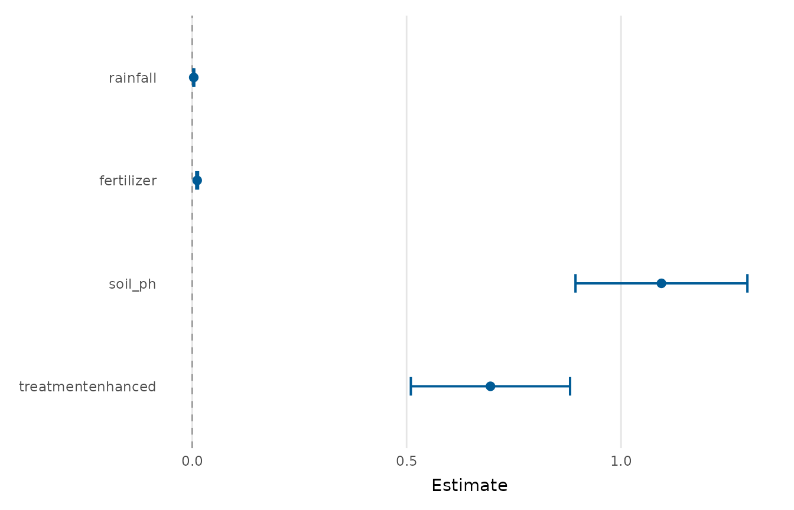
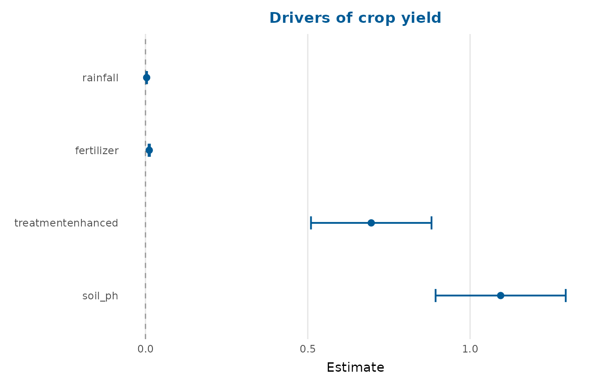

Draws a horizontal point-and-interval ("forest") plot of model estimates.
The input can be a fitted model (anything tidy_estimates() understands) or
a data frame of pre-computed estimates.
Usage
coefficient_plot(
x,
conf_level = 0.95,
intercept = FALSE,
order = c("none", "ascending", "descending"),
labels = NULL,
interaction = c("times", "asterisk", "colon", "space"),
point_colour = "#005b96",
reference_colour = "grey60",
reference_line = 0,
point_size = 2.2,
line_size = 0.7,
title = NULL,
subtitle = NULL,
x_lab = "Estimate"
)Arguments
- x
A fitted model or a tidy data frame of estimates.
- conf_level
Confidence/credible level, passed to
tidy_estimates()whenxis a model.- intercept
Whether to keep the intercept term. Defaults to
FALSE, since the intercept is seldom of interest on a forest plot and its scale often overwhelms the other terms.- order
Order the terms by estimate:
"none"(keep input order),"ascending"or"descending".- labels
Optional display labels for the terms. Either a character vector the same length as the number of terms (in plotting order) or a named vector mapping raw term names to labels. If
NULL, names are tidied withformat_terms().- interaction
Passed to
format_terms()to control how interaction terms are rendered (ignored whenlabelsis supplied).- point_colour, reference_colour
Colours for the estimates and the reference line.
- reference_line
Position of a vertical reference line (e.g.
0for differences,1for odds/risk ratios). UseNAto omit it.- point_size, line_size
Size of the points and interval lines.
- title, subtitle, x_lab
Plot title, subtitle and x-axis label.
Value
A ggplot2::ggplot object.
Examples
fit <- lm(yield ~ rainfall + fertilizer + soil_ph + treatment,
data = crop_yield)
coefficient_plot(fit)
#> `height` was translated to `width`.

# Order terms and add a title
coefficient_plot(fit, order = "descending", title = "Drivers of crop yield")
#> `height` was translated to `width`.
